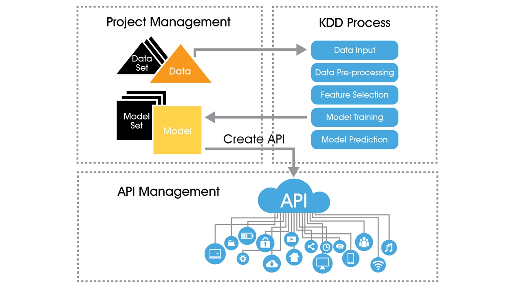

Welcome to InAnalysis!
InAnalysis機器學習平台能將資料變成可行動的商業智慧。開發者無需具備任何機器學習經驗，就能輕鬆使用。
流暢KDD流程，掌握模型訓練與資料狀況
快速建置API，輕鬆將模型佈署至任何應用
RWD設計適用任何裝置，可隨時隨地使用服務
How Does It Work?
Project Management 能夠察看所有專案相關資訊, 新增專案, 修改專案, 刪除專案。 新增專案後點選KDD，進入專案KDD流程:Data Pre-process, Feature Selection, Model Training, Model Prediction。 訓練出Model後可以建置成API，輕鬆將模型佈署至任何應用。API Management能夠察看使用者建立的API, 修改API, 刪除API。
 InAnalysis Work FlowWhat Do They Think?
Stories of people inspired by InAnalysis to change their life through Machine Learning.
王小鎂覺得很好用
王小鎂覺得很好用
王小鎂覺得很好用